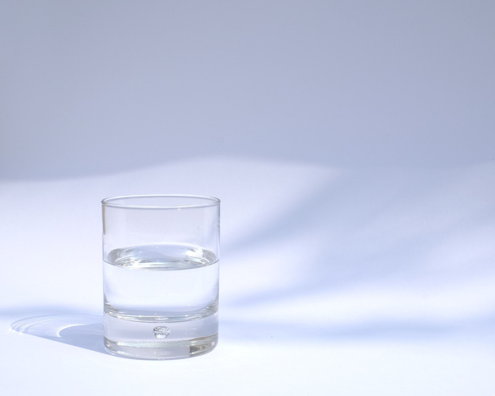

제주 삼다수
물인데 맛있다. 삼다수는 왜 16년 부동의 1위일까
제주특별자치도개발공사가 생산하고 광동제약이 판매하는 생수. 국민 생수로 불리는 생수. 용량은 대중적인 2L와 500mL가 있고, 2018년 10월 즈음에 1L와 330mL 제품이 추가로 출시되었다. 정식 명칭은 제주 삼다수로, 화산암반이 필터 역할을 해내는 화산암반수이다.
서구권 생수 중에서는 프랑스의 화산암반수 생수인 볼빅(Volvic)과 매우 비슷한 편이다. 육지 기준으로 다른 생수가 보통 편의점에서는 500원 ~ 800원, 대형마트에서는 400원 ~ 600원 하는데 반해 물류비로 인해 혼자 100원 ~ 200원 더 비싸게 팔고 있지만 세간의 평가는 비싼만큼 돈값을 한다는게 주류다. 값싼 생수들에 비하면 확실히 물의 질이 좋고, 오래 놔둬도 맛이 변질되는 시간이 굉장히 길다. 삼다수 하나 때문에 고급 포지션을 꽉 잡고 있는 볼빅이나 에비앙이 한국에서만큼은 돈값을 못 한다는 소리도 나온다.
제주도 현지에서는 가격이 매우 저렴하다. 제주도 내 유통 삼다수는 제주특별자치도개발공사가 직접 판매하여 판매 주체가 다르기 때문. 묶음용 포장도 제주도에 유통되는 제품과 기타 지역은 다르다. 더 알기 쉬운 특징으로는 제주도용 삼다수는 묶음 판매 제품의 손잡이가 연두색이고 기타 지역용은 파란색. 단, 낱개 제품의 포장은 기타 지역용과 똑같다. 요즘은 원가절감 때문인지 아예 같은 디자인에 제주도내 판매처와 기타지역 판매처를 둘 다 찍어놓는다. 다만 유통기한 아래에 제주도내 판매용이라고 찍혀있다. 여담으로 제주항에 가면 선적을 기다리는 삼다수 페트병 수만 개가 옹기종기 쌓여있는 진풍경을 심심찮게 볼 수 있다.